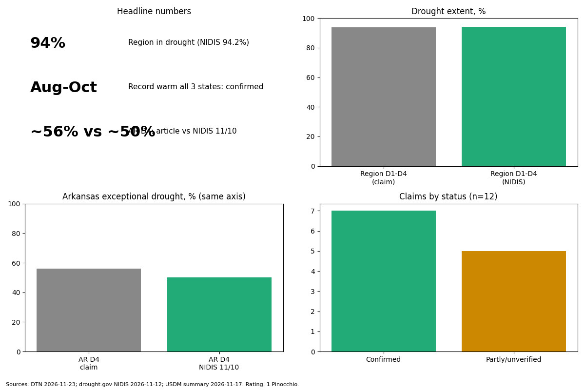

Drought covers about 94% of the region (NIDIS: 94.2%, data valid 11/10), Aug-Oct was warmest on record in AR, LA, MS (NIDIS: 1st warmest), El Nino could ease drought (NIDIS: strong El Nino >83% likely), and the "20 to 30 inches in a 3-month span" quote is verbatim from the USDM summary of 11/17/2026. Arkansas D4 of about 56% is higher than NIDIS's "almost 50%" (11/10 data); likely a newer USDM week, but I could not confirm it because the USDM API returned an empty result. State D2-D4 shares (AR >90%, MS >80%, LA >82%), temperature departures of 5-9F, and monthly precipitation percentages were not checkable from pages I could read; NIDIS gives ranks (precip 3rd/4th/5th driest) instead. Caveat: the 94% is D1-D4 and the NIDIS category breakdown does not sum cleanly. Not misleading overall; "more than double from late July (~42%)" was not verified.